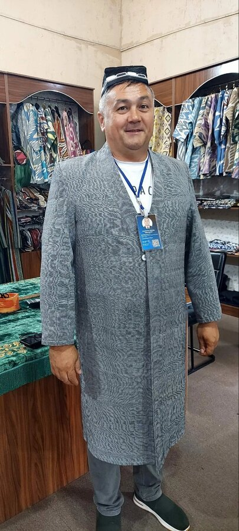
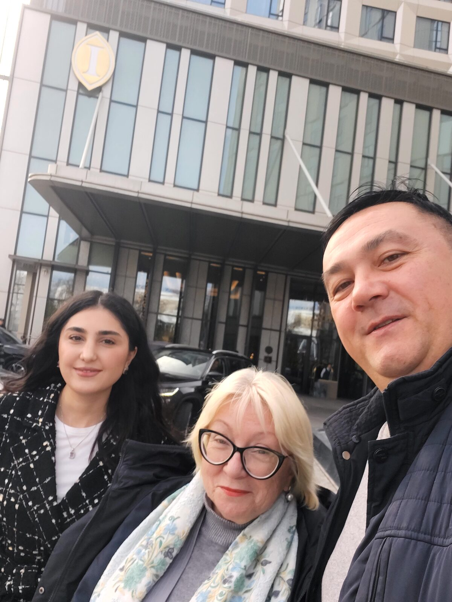
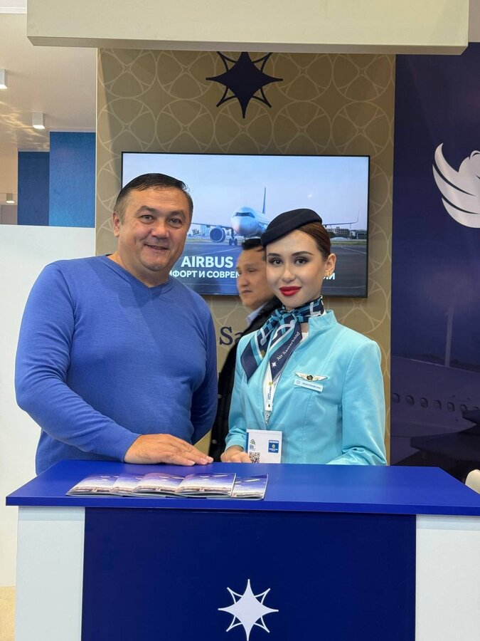

Tourism is not our job. It is our way of life.
We are a team of local guides based in Tashkent, Uzbekistan. We have spent years learning the history, the architecture, the food, the stories, and the hidden corners of this extraordinary country so that we can share all of it with you.
Our routes are not standard excursions. They are carefully designed journeys that take you into the culture, the nature, and the history of Uzbekistan in a way that leaves you with something real. Not just photographs, but a genuine feeling for the place.
Uzbek Travel grew out of a simple belief: that the best way to experience a country is through the eyes of someone who truly loves it. Our founder Mahmud began guiding visitors through Tashkent because he simply could not stop talking about the city he grew up in. That same passion brought together our team of guides, each one an expert in their own corner of Uzbekistan.



Today we lead private tours, group excursions, mountain adventures, wine and food experiences, and multi-day journeys from Tashkent all the way to Bukhara. Every tour is led by a licensed, experienced guide who speaks your language and knows this place inside out.
You can also find and review our tours on Tripster and Sputnik, two of the leading travel platforms for independent travelers in the region.
Tell us when you are coming, what you are interested in, and how many people are in your group. We will get back to you within 24 hours.
Plan My Trip